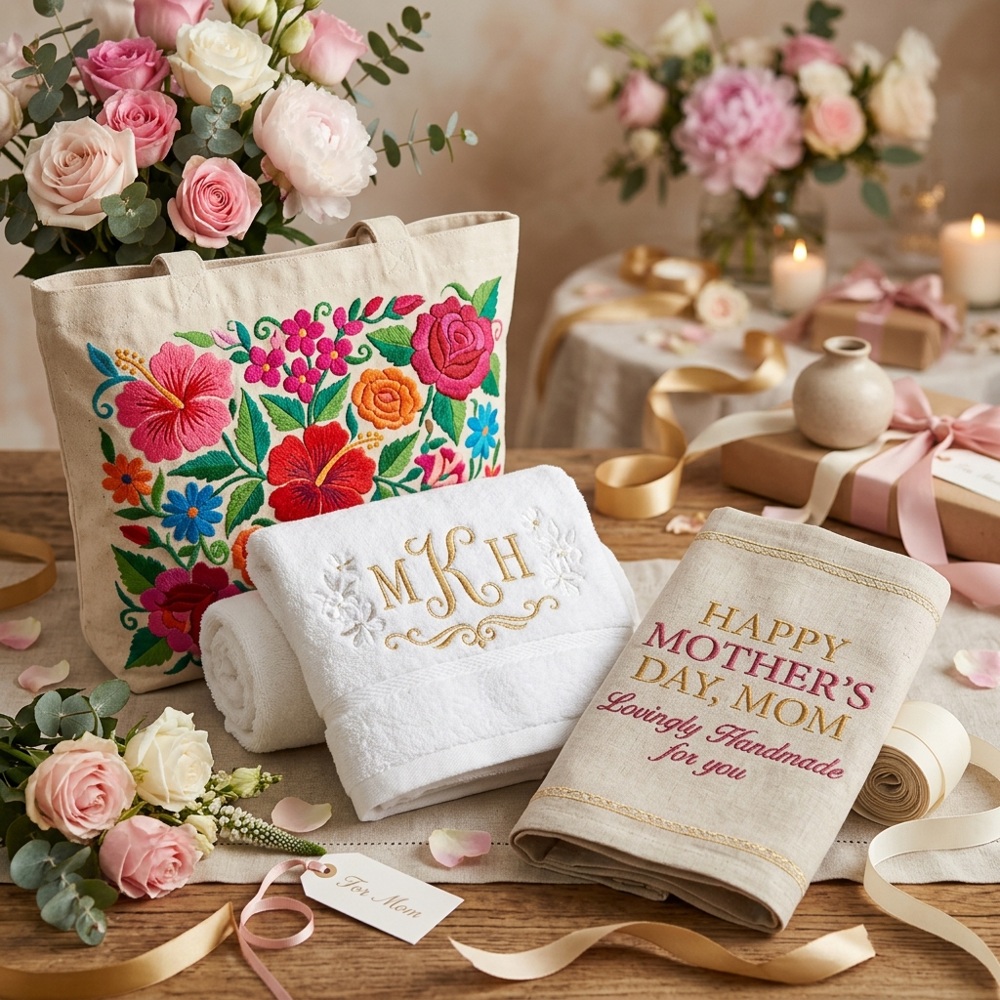

El regalo genérico ya no llega. Esto es lo que está pasando ahora.
Seamos honestos: los regalos de aniversario de siempre ya no emocionan como antes. El peluche gigante que ocupa espacio, el perfume de siempre, la joyería que no se usa... Todo eso se consigue en cualquier tienda y puede sentirse como un regalo de último momento.
Lo que está arrasando ahora — y lo ves en TikTok, Instagram y Pinterest todos los días — es algo completamente diferente: regalos que nadie más tiene. Prendas que llevan un significado que solo los dos entienden. Algo que cuando el otro lo ve, sabe exactamente quién lo pensó para él o ella.
Las matching hoodies — sudaderas a juego para parejas — con bordado minimalista son exactamente eso: un regalo que combina moda, personalización y sentimiento en una sola prenda que ambos van a querer usar todos los días.
Y lo mejor de todo: con bordado digital a máquina, ese diseño discreto y elegante es permanente. No se borra. No se pela. No se despinta. Es tan duradero como el amor que representa.
Ideas de Personalización: Lo que Bordamos a Máquina para Parejas
El bordado minimalista para parejas es un arte en el que menos es más. Un detalle pequeño, preciso y significativo vale más que un diseño elaborado y genérico. Aquí van las ideas más populares y las que mejor quedan:
💌 Iniciales entrelazadas o separadas
La inicial de cada uno, bordada de forma discreta en el puño de la manga, el pecho o la nuca. Simple, elegante y con un significado que solo la pareja entiende.
- Una inicial sola: La inicial del otro bordada en el puño izquierdo. Esa "N" o "A" que está ahí, callada, cada vez que mueves la mano.
- Initiales entrelazadas: Un monograma con las dos iniciales unidas en un diseño tipográfico elegante — como los que ves en las prendas de lujo europeas.
- Iniciales separadas en el mismo lugar: "A & N" en tipografía script, bordado en el pecho izquierdo o en la manga.
El truco del bordado minimalista está en la posición y la tipografía. En Bortex digitalizamos el diseño para que quede exactamente donde debe ir — ni muy grande ni muy pequeño.
🔢 Fechas importantes en números romanos
Esta es, sin duda, la opción más popular y la que más emociona cuando se abre el regalo. Una fecha significativa convertida en números romanos tiene algo de misterioso y especial — casi como un código privado que solo los dos conocen.
- Fecha del primer beso: Ejemplo: XV · X · MMXXV bordado en el pecho, en tipografía espaciada y moderna.
- Fecha de aniversario: El día que se hicieron novios, el día de la boda o cualquier fecha que marque su historia.
- Fecha de un momento especial: El día que se conocieron, el primer viaje juntos, el día que se comprometieron.
Las opciones de colocación más elegantes son el centro del pecho (grande, protagonista), el puño de la manga (discreto, íntimo) o la parte baja de la sudadera (juguetón y creativo).
💬 Frases compartidas y secretos entre dos
¿Tienen un dicho que solo ustedes usan? ¿Una frase de su película favorita? ¿Un apodo? ¿La primera frase que uno le dijo al otro? El bordado puede capturar eso de forma permanente.
- Frases cortas en español, inglés o cualquier idioma.
- El nombre que uno le pone al otro — el apodo de cariño.
- Una línea de canción que significa algo para los dos.
- Una palabra en zapoteco que los describa.
🌍 Coordenadas del lugar donde se conocieron
Esta idea llegó de las tendencias globales y se ha vuelto muy popular: las coordenadas geográficas (latitud y longitud) del lugar donde se conocieron, bordadas en formato numérico discreto.
- Coordenadas del parque, café, escuela o lugar donde todo comenzó.
- Formato ejemplo: 16.4336° N · 95.0149° O (coordenadas de Juchitán de Zaragoza).
- Se borda en tipografía pequeña y matemática — minimalismo puro.
❤️ Diseños geométricos y símbolos minimalistas
- Un corazón minimalista de una sola línea, sin relleno.
- Una coordenada de corazón en el puño.
- Dos figuras abstractas tomadas de la mano.
- El símbolo de infinito con las iniciales adentro.
Calidad Premium: El Ponchado que Hace que el Diseño Quede Perfecto
El bordado minimalista tiene una exigencia técnica especial: cuando el diseño es simple y pequeño, cualquier error se nota más. Una letra torcida, un espaciado irregular o una puntada que se sale de lugar arruina exactamente el efecto de elegancia que se busca.
Por eso en Bortex el proceso comienza con un ponchado digital de precisión específico para diseños minimalistas:
- Tipografías calibradas para bordado pequeño: No todas las tipografías funcionan en escala reducida. Seleccionamos o adaptamos las que mantienen su elegancia incluso en bordados de 5–8 mm de altura.
- Densidad reducida: Los diseños minimalistas se bordan con densidades más bajas para que el resultado se vea limpio y no sobrecargado.
- Simulación previa: Antes de bordar, te mostramos cómo quedará el diseño en la prenda. Solo arrancamos producción cuando apruebas el resultado.
- Colocación exacta: El posicionamiento es crítico en el bordado de parejas — la misma pieza debe quedar en el mismo lugar en ambas prendas.
El resultado es un bordado que se ve limpio, intencional y premium. Exactamente como debería verse un regalo pensado con amor.
"Un bordado minimalista dice más en dos letras que un estampado gigante con todo escrito."
¿Qué Prendas Funcionan Mejor?
- Hoodies y sudaderas: La opción estrella para el concepto matching. Disponibles en cualquier color.
- Camisetas oversize: Para un look más casual y moderno.
- Polos a juego: Si prefieren un estilo más formal pero igualmente coordinado.
- Gorras a juego: Con las iniciales bordadas en 3D — impacto visual garantizado.
- Chamarras de mezclilla: El bordado en mezclilla tiene un contraste espectacular.
¿Con Cuánto Tiempo Debo Planear el Regalo?
- Diseño minimalista simple (iniciales, fecha): 2–3 días hábiles.
- Diseño personalizado (coordenadas, frases, monograma): 3–5 días hábiles.
- Paquete completo (hoodie + gorra + personalización especial): 5–7 días hábiles.
Tip: Si tu aniversario se acerca, mejor planea con una semana de anticipación. El bordado minimalista merece hacerse bien, y hacerlo bien requiere su tiempo.
💑 ¿Qué fecha o iniciales quieres bordar?
Cuéntanos la idea y la hacemos realidad. Mangas, pecho, puño, nuca — donde lo imagines, lo bordamos. Un regalo que los dos van a querer usar siempre.
Cotizar por WhatsApp Cotizar en línea